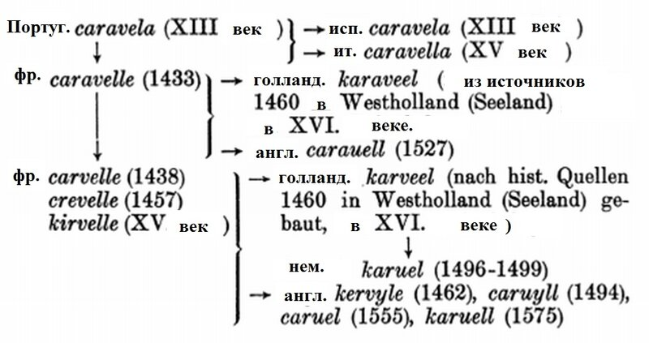

Португальская каравелла (еще немного этимологии)
Когда наскучат ей лукавые новеллы
И надоест лежать в плетеных гамаках,
Она приходит в порт смотреть, как каравеллы
Плывут из смутных стран на зыбких парусах.
Э. Багрицкий. Креолка (1915)
Выше мы познакомились с представлениями о происхождении слова каравелла в португальском языке; сейчас посмотрим, какое дальнейшее развитие получил этот термин в других языках. Я воспользуюсь для этого небольшой схемой из работы признаного авторитета в этом вопросе B. E. Vidos’а Beiträge zur französischen Wortgeschichte (опубликована в Zeitschrift für französische Sprache und Literatur, Bd. 58, H. 7/8 (1934), pp. 448-481)
[Вообще, практически все современные ссылки по этимологии термина каравелла завязаны на эту фундаментальную статью нидерландского романиста Видоса (Benedek Elemér Vidos, 1902-1987)]

Сделаем некоторые пояснения.
Португальская caravela, ставшая родоначальницей всей этой схемы, упоминается в документах, начиная с 1255 года, когда это было рыболовное судно грузоподъемностью около 10 тонн. (Версию с записью от 1226 года мы отвергли в прошлом рассказе как сомнительную). Далее этот термин распространяется по всему Средиземноморью и, при французском посредничестве, проникает в Северную Европу. Добавим к этой схеме также проникновение термина каравелла (через испанцев и португальцев) в мусульманские земли Восточного Средиземноморья – появляются арабские названия qarrabilla, qarrabīla (Kindermann). В кипрской хронике Бустрона 1456 г. мы видим возвращение термина в греческий язык в форме καραβέλλα. Затем слово проникает в турецкий язык, а через него – и в болгарский. В турецком термин karavela по непонятным причинам меняется на karavana.
Источник заимствования слова каравелла в русский язык точно не установлен. В “Словаре русского языка XVIII в.“ указывается на испанский язык (carabella), в словарях иностранных слов эта лексема считается заимствованием из французского языка. В письменных источниках начала XVIII в. отмечается несколько вариантов данного названия судна - каравель (1703 г.), каравеля (1705 г.) и каравелла (1729 г.) “ Словотолкователь” Яновского [1803 г.] фиксирует две формы - каравель и каравелла.
Несмотря на сравнительно раннее проникновение термина каравелла в русский язык, путаница в его истинном значении сохранялась вплоть до конца XIX века. С. Елагин в «Истории Русского флота. Период Азовский» (1864), дает такое примечание:
Подъ словомъ каравелла или кравелла не слѣдуетъ, какъ кажется, подразумѣвать судовъ особаго рода, потому что названіе это произошло отъ особой системы постройки судовъ, именно отъ расположенія обшивныхъ досокъ не въ накрой, а въ шпунтъ. (de Jonge).
(с.5)
Мы в дальнейшем покажем, в чем заблуждался С.Елагин, а также расскажем о развитии самого этого корабля, а не только его названия.